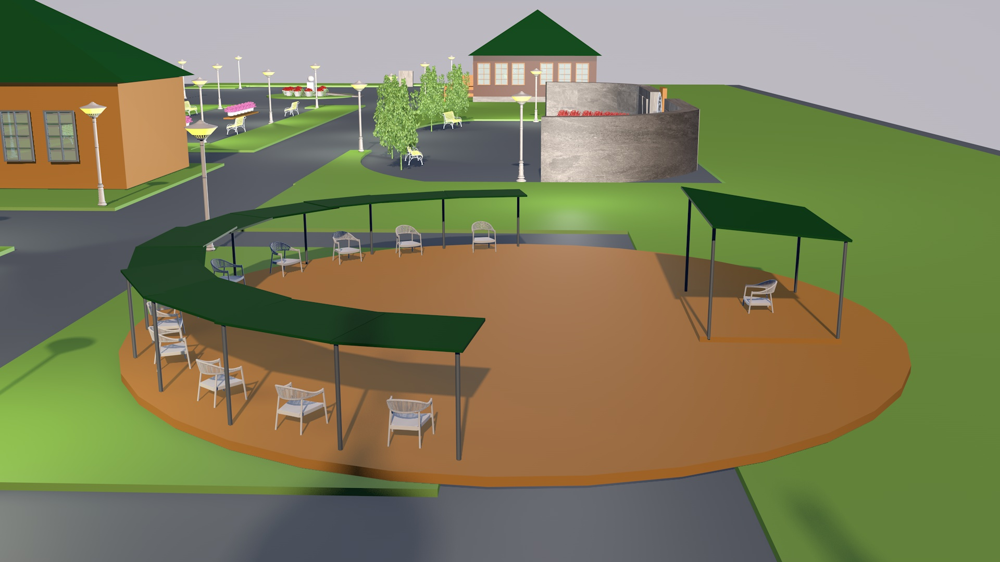

<!DOCTYPE html>
<html lang="ru">
<head>
	<meta charset="UTF-8">
	<meta name="viewport" content="width=device-width, initial-scale=1.0">
	<script src="jquery-3.x-git.min.js"></script>
	<title>Interactive image</title>
	<style>
		* {
			margin: 0;
			padding: 0;
		}
		.map {
			position: relative;
			text-align: center;
		}
		.map img {
			width: 100%;
		}
		svg {
			position: absolute;
			top: 0;
			left: 0;
			height: 100%;
			width: 100%;
		}
		.zone {
			opacity: .0;
		}
		.zone:hover {
			transition: opacity .3s ease-in-out;
			opacity: .2;
			cursor: pointer;
		}

		/* Description modal */
		.description {
			display: none;
			text-align: justify;
			width: 400px;
			background-color: #fff;
			position: absolute;
			padding: 20px;
			box-sizing: border-box;
			padding: 16px;
			box-shadow: 0 0 32px 10px #ccc;
			border-radius: 8px;
			left: 50px;
			top: 50px;
		}
		.description img {
			width: 100%;
			margin: 16px 0;
		}	
	</style>
</head>
<body>
	
	<div class="map">
		<svg viewBox="0 0 16256 9144">
			<polygon description-data="<h3>Музей образования Хангаласского улуса</h3><p>Год постройки: 1914 г. С 2020-го г. является объектом историко-культурного наследия регионального значения.</p>" id="object2" class="zone" fill="#fff" points="1422,5986 2159,5783 2261,6011 2978,5783 3021,5913 3389,5810 3344,5707 4343,5393 4318,5258 4225,5114 4183,4851 4256,4822 3855,4104 2608,4386 1016,4856 1262,5664 1329,5656 "/>
			<path description-data="<h3>Сквер “Живая память”</h3><p>Описание от НВП</p>" id="object3" class="zone" fill="#fff" d="M7027 3294c-225,56 -451,112 -677,169 -158,20 -288,144 -305,322l-245 76 787 931 3082 -948 -567 -483 0 -186c-144,-212 -466,-279 -779,-229l-1296 348z"/>
			<path description-data="<h3>Событийная зона</h3><p>Место для  проведения различных мероприятий в теплое время года для учащихся школы  и участников учебных сессий МАН,   жителей села , туристов и  посетителей музея.<br><i>Cцена и амфитеатр</i></p>" id="object7" class="zone" fill="#fff" d="M9855 2997l720 551 1702 -517 -805 -508 -220 76c0,0 -189,-72 -436,-76 -1,0 3,-23 -15,-37 -17,-13 -21,-16 -31,-22 -27,-16 -65,-45 -110,-34l-288 68 -9 101c0,0 -237,51 -237,305 0,41 -217,106 -255,105l-16 -12z"/>
			<polygon description-data="<h3>Сквер “Живая память”</h3><p>В сквере будет сооружен мемориальный комплекс из архитектурных сооружений МАФ (малых архитектурных форм) на которых будут увековечены имена первых меценатов и народных учителей, выпускников и учителей – активных участников гражданской войны, общественно-политических и государственных деятелей, чьи имена вписаны в историю первой школы золотыми буквами.</p>" id="object5" class="zone" fill="#fff" points="11100,1897 12404,2455 12819,2261 12768,2235 12793,2125 12649,2083 12717,1753 12659,1753 12666,1719 12852,1617 12886,1456 12835,1422 12954,1329 12522,1185 12531,1075 12481,1075 12454,1075 12454,1177 11193,1702 11193,1617 11134,1617 11125,1643 "/>
			<path description-data="<h3>Возвращение исторического вида Октемской Свято - Троицкой церкви</h3><p>Церковь построена в 1876 г. и освящена в 1890 г. епископом Якутским и Вилюйским Мелетием. Церковь возрождена по инициативе и финансовой поддержке первого Президента Якутии М.Е. Николаева и населения Октемского наслега. Церковь в настоящее время является действующей. В Октемской Свято- Троицкой церкви были крещены: первый историк Якутии Попов Г.А., мать первого Президента РС(Я) М.Е. Николаева (Козлова) и др. известные люди.</p>" id="object6" class="zone" fill="#fff" d="M13775 2625l102 -60 347 127 310 -237 88 -338 59 -51 -118 -119 59 -245 85 -51 -136 -93 34 -144 102 -57 -170 -108c51,-72 76,-153 9,-216l25 -220 42 -26 0 -33 -33 8 3 -67 -37 4 0 71 -51 22 -1 50 35 -12 -68 186c-59,25 -131,64 -93,178l-17 42 -186 85 -9 17 85 25 -51 203 -415 -224 0 -59 85 -64 -144 -93 0 -83c47,-74 68,-141 0,-205l4 -203 63 -20 -8 -48c-3,0 -32,6 -34,5 -5,-6 0,-47 0,-47 -3,-2 -25,3 -25,8l-4 51 -55 17 0 47 34 -9 -68 191c-55,25 -110,51 -76,169l-26 119 -186 84 76 43 -25 127 -51 -9 -102 68 -101 -68 0 -146 -144 -23 -34 180 -76 48 34 26 -34 165c0,0 -191,128 -199,114 -8,-14 64,24 64,24l-65 314 110 31 -20 139 1007 390z"/>
			<path description-data="<h3>Памятник первому учителю улуса Неустроеву В.Г.</h3><p>Неустроев В.Г. - один из 4-х братьев Неустроевых, родных племянников бывшего улусного головы Гермогенова А.Н., внесших большой вклад в развитие образования и просвещения  Якутии:<p>- Неустроев В.Г. (? - 1908) - первый учитель первой школы Хангаласского улуса;</p><p>- Неустроев И.Г. (1854 - ?) - первый гражданский учитель Баягантайского училища Таттинского улуса;</p><p>- Неустроев М.Г. (1857- 1926 гг.) - первый учитель одноклассной Верхневилюйской школы;</p><p>- Неустроев К.Г. (Урсик) (858-1883) - первый ученый из якутов, революционер -народник.</p><p>Неустроев В.Г. - основатель большой педагогической династии Неустроевых с общим стажем 483 лет.</p><i>Бюст на постаменте перед зданием Алексеевского училища (Музея образования)</i></p>" id="object1" class="zone" fill="#fff" d="M3412 6545c-389,169 -643,796 347,702l229 -76c593,-342 381,-804 -368,-712l-30 -58 -212 68 34 76z"/>
  			<polygon description-data="<h3>Восстановление здания первой школы улуса 1874 г.</h3><p>Построено на средства купца II гильдии Ивана Павлова. Именовано Алексеевским народным училищем с высочайшего разрешения государя Александра II в 1878 г.</p>" id="object4" class="zone" fill="#fff" points="9457,4267 10499,5173 11695,4720 11396,4487 11405,4462 10549,3742 10346,3649 9627,3861 9627,3890 9690,3920 9669,4176 "/>
		</svg>
		
		<div class="description">
			<!-- <h3>Музей образования Хангаласского улуса</h3><p>Год постройки: 1914 г. С 2020-го г. является объектом историко-культурного наследия регионального значения.</p> -->
			<!-- <h3>Памятник первому учителю улуса Неустроеву В.Г.</h3><p>Неустроев В.Г. - один из 4-х братьев Неустроевых, родных племянников бывшего улусного головы Гермогенова А.Н., внесших большой вклад в развитие образования и просвещения  Якутии:<p>- Неустроев В.Г. (? - 1908) - первый учитель первой школы Хангаласского улуса;</p><p>- Неустроев И.Г. (1854 - ?) - первый гражданский учитель Баягантайского училища Таттинского улуса;</p><p>- Неустроев М.Г. (1857- 1926 гг.) - первый учитель одноклассной Верхневилюйской школы;</p><p>- Неустроев К.Г. (Урсик) (858-1883) - первый ученый из якутов, революционер -народник.</p><p>Неустроев В.Г. - основатель большой педагогической династии Неустроевых с общим стажем 483 лет.</p></p> -->
			<!-- <h3>Сквер “Живая память”</h3><p>В сквере будет сооружен мемориальный комплекс из архитектурных сооружений МАФ (малых архитектурных форм) на которых будут увековечены имена первых меценатов и народных учителей, выпускников и учителей – активных участников гражданской войны, общественно-политических и государственных деятелей, чьи имена вписаны в историю первой школы золотыми буквами.</p> -->
			<!-- <h3>Восстановление здания первой школы улуса 1874 г.</h3><p>Построено на средства купца II гильдии Ивана Павлова. Именовано Алексеевским народным училищем с высочайшего разрешения государя Александра II в 1878 г.</p> -->
			<!-- <h3>Событийная зона</h3><p>Место для  проведения различных мероприятий в теплое время года для учащихся школы  и участников учебных сессий МАН,   жителей села , туристов и  посетителей музея.<i>сцена и амфитеатр</i></p> -->
			<!-- <h3>Сквер памяти усопшим православным</h3><p>Сквер построен 27.09.2008 г. ИКОО “Октем” (историко краеведческая общественная  организация) на средства гранта Президента РФ. На церковном погосте были похоронены почетный гражданин,первый учитель Неустроев В.Г., улусный глава Боппосов П.М. и др.почетные граждане.</p> -->
			<!-- <h3>Возвращение исторического вида Октемской Свято - Троицкой церкви</h3><p>Церковь построена в 1876 г. и освящена в 1890 г. епископом Якутским и Вилюйским Мелетием. Церковь возрождена по инициативе и финансовой поддержке первого Президента Якутии М.Е. Николаева и населения Октемского наслега. Церковь в настоящее время является действующей. В Октемской Свято- Троицкой церкви были крещены: первый историк Якутии Попов Г.А., мать первого Президента РС(Я) М.Е. Николаева (Козлова) и др. известные люди.</p> -->
			
		</div>
	</div>
</body>
<script>
	$('.zone').click (
		function() {
			$('.description').html($(this).attr('description-data'));
			$('.description').fadeIn(50);
		}
		// function() {
		// 	$('.description').fadeOut(50);			
		// }
	);
	
	// close desc onclick outside
	$(document).mouseup(function(e) 
	{
		var container = $('.description');

		// if the target of the click isn't the container nor a descendant of the container
		if (!container.is(e.target) && container.has(e.target).length === 0)
		{
			container.hide();
		}
	});
</script>
</html>